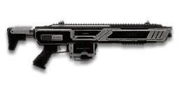

← Back to the NSX Yumi comparison
Sage Guide · Nanite Systems · Combat Medic · All factions
The charge-up burst rifle that any faction's Combat Medic can carry — once you've bought it. Five bullets, faster than any other gun in the game, after a short wind-up you have to plan around.
Read this first — this gun is NOT a starter. The NSX Yumi costs 1,000 certs (or 799 Daybreak Cash). No faction is handed it for free. Your free starter rifle is your faction's own — T1 Cycler, NC1 Gauss Rifle or Pulsar VS1 — and the NSO starter is the AR-100. The Yumi is a purchase you make later, because you want a mid-range burst rifle, not a gun you start with.
The one-line verdict: the most accurate assault rifle you can buy, with the hardest-hitting burst in the game — and a 0.25-second wind-up before every burst that punishes anyone who reacts instead of planning. It rewards firing first, aiming at the neck, and fighting at 10–40 metres. It punishes snap reactions, close-quarters panic, and spray-and-pray. Learn the pause and it will carry you.

The NSX Yumi · Nanite Systems · 30-round magazine · 1,000 certs
Every section below folds shut — tap a heading to open it. Section 01 starts open, because it's the lesson that saves you the most deaths.
Picture the scene, because you've probably lived it: you're sprinting across a courtyard, an enemy appears, and you do everything at once — hold the trigger down while you're still running, then press aim-down-sights (ADS) a split-second later, finger still down. The sight picture snaps in, it looks precise… and your bullets spray everywhere except the man in your crosshair. He kills you. It feels like the game cheated. It didn't — here's what actually happened.
Sprinting is the least accurate state in the game: your cone starts at 7.0° — fully bloomed, the widest it can ever be — and every hipfire shot widens it further (+0.12° per shot). Pressing ADS mid-hold changes the picture, not the cone.
You started firing from a sprint, from the hip. Sprinting is the least accurate state in the game: your cone of fire starts at 7.0° — fully bloomed, the widest it can ever be. Every shot you fire from the hip widens it further still (+0.12° per shot).
Then you pressed ADS mid-hold — and nothing reset. Aiming down sights does not shrink a cone of fire that is already bloomed. The scope only gives you a precise picture; the bullets keep flying out of the wide cone you built while running and hipfiring. That's the whole mystery: accurate-looking aim, wildly inaccurate gun.
Two timers stack the deck further: your gun needs about 0.3 s to settle after a sprint, and raising the sight itself takes ~0.15 s. Trigger held through all of it means your first half-second of fire is pure confetti.
And on this gun there's a third timer no other rifle has: even once you're aimed and still, the Yumi winds up for 0.25 s after you press the trigger before the first bullet leaves. If you only start aiming when you see the enemy, that quarter-second is when he kills you.
1 · Feet. Let go of sprint (and the trigger, if you're already holding it). Stop, or drop into a strafe — anything but a full sprint. Do this from behind cover, before you peek.
2 · Sight. Press ADS and let the sight come up. This takes a heartbeat — that's fine, cover buys it.
3 · Trigger. Now press — and hold your aim steady through the wind-up. Starting from the aimed cone of 0.03°, your first shots land where the dot points, and you control the bloom from zero instead of inheriting a maxed-out cone.
Stop → aim → fire. If you take one habit from this entire page, take this one. You'll practise exactly this rhythm in the simulator in section 04 — including the wind-up, which is the part that makes this gun different.
Three beats, always in this order. Stop first so the cone can shrink, aim second so the sight is up before any bullet leaves, fire third from a cone that starts at 0.03° instead of 7.0°. The whole sequence costs about half a second — cover buys it, and the wind-up happens inside that half-second if you press the trigger the moment the sight is up.
Every enemy infantry has 1,000 health (500 shield + 500 health). Your bullet does 167 damage up close, fading to 143 at long range. Headshots count double, leg shots count less (×0.9). There are only two damage tiers to memorise — no middle step — and because one burst is exactly 5 bullets, the kill always comes down to "one burst, plus a little":
| Range | Damage | Head | Chest | Legs | Chest vs shielded Heavy |
|---|---|---|---|---|---|
| Close · 0–10 m | 167 | 3 | 6 | 7 | 9 |
| Mid · 10–90 m | ≈155 @ 50 m | 4 | 7 | 8 | 10 |
| Far · 90 m+ | 143 | 4 | 7 | 8 | 11 |
Six chest shots up close means the kill lands on the first bullet of your second burst — the whole first burst (5 shots) plus one more. Past 10 m it's seven chest shots: the whole first burst plus the first two of the second. Against a Heavy with his overshield up (1,450 health) you need two full bursts up close, and eleven chest shots far away. Headshots change everything: 3 headshots end a normal enemy up close, 4 at any longer range — and three of those can all land inside a single burst.
Full power to 10 m, then a steady slide to minimum at 90 m — the longest full-power band of any 167-damage rifle. The gold line shows Soft Point Ammunition, which stretches full power to 15 m.
One gun, four fighting styles. The right technique changes with distance — use the range finder below to see what your bullets do at any range, then learn the four bands underneath it. The "time to kill" here counts from the trigger press, wind-up included.
How to fight hereAim down sights at the upper chest and neck. One burst, one breath — and if a headshot lands in the burst, the second burst is often unnecessary.
Aim: centre of the chest, from the hip. Keep moving — or draw your pistol.
Scoping in costs you time and slows you to half speed — at arm's length that gets you killed. Hipfire works here (your moving ring is only ~0.5 m wide), but remember the wind-up: even from the hip, the burst takes 0.25 s to start. Inside 5 m, a pistol that fires instantly is the better gun. The Yumi's home is not a knife fight.
Aim: neck / upper chest. One 5-round burst, breathe, next burst if needed.
This is where the gun earns its keep: full or near-full 167 damage, a 0.03° cone, and recoil so gentle the burst barely moves. Start your crosshair at the neck — the slight upward climb walks shots two and three into the head, and 3 head hits end the fight inside a single burst. Fire first here and the enemy rarely gets to shoot back.
Aim: chest. One burst, let the cone settle, next burst.
Damage is sliding toward 143 and your cone blooms 0.05° with every shot of the burst, so the fifth bullet already flies from a 0.23° cone. Don't chain bursts back-to-back — the half-second between them is when your accuracy resets. The recoil climbs straight up (5° angle, no sideways lean), so pull your mouse gently down. Crouch or stand still when you can — both tighten your shots, and crouching costs you nothing on this gun.
Aim: chest. Single bursts at exposed targets only.
At 143 damage you need 7 chest hits, and each burst is only 5 — a long, loud advertisement of your position. Take these shots at stationary or fleeing targets, medics reviving, and engineers on turrets. There is no tap-fire on this gun: every click spends a whole burst, so make each one count. Otherwise, your better play is to close the distance behind cover. Knowing when not to shoot is a skill too.
Your accuracy is decided by two things before skill even enters it: what your body is doing (your stance sets the starting cone of fire) and how the burst works (one click is always five bullets, after a 0.25 s wind-up). The Yumi has no fire-mode switch and no single-shot option — "firing modes" are something you do with your finger, not a setting on the gun.
| Stance | Starting cone | What it means for you |
|---|---|---|
| Sprinting | 7.0° | Maxed out — the widest the cone can be. This is the section 01 disaster: never start firing from a sprint. |
| Hipfire, moving | 3.0° | Walking or strafing from the hip. Fine inside ~10 m, leaks rounds past the target beyond it. |
| Hipfire, standing | 2.5° | Your point-blank default. The 0.35 m ring at 8 m in section 05 is this stance drawn out. |
| Hipfire, crouched | 2.0° | The tightest hipfire you have (2.25° if you crouch-walk). Crouch when holding a doorway from the hip. |
| Aimed (ADS), feet planted | 0.03° | Standing or crouched makes no difference here — this gun gets no accuracy bonus for crouching while aimed. Eighty times tighter than hipfire. This is why section 01's order matters. |
| Aimed (ADS), strafing | 0.15° | The moving floor while aiming — five times wider than planted, still tiny. But you only move at 0.5× speed while aiming, the slowest of any assault rifle: strafe between bursts, not during them. |
| Rhythm | How your finger does it | Use it at |
|---|---|---|
| One click, one burst — the default | Click once, let all 5 rounds fire, release, breathe, click again | Almost everything, 10–50 m. Every burst starts at 0.03° if you let the cone settle between bursts. |
| Hold to chain bursts | Hold the trigger down — bursts fire back-to-back every 0.74 s on their own | Only when the target is already hurt or standing still. Chained bursts start from a partly-bloomed cone, so the later bursts spread wider. |
| Queue the next burst | Click again while the current burst is still charging or firing — the next burst starts the moment the pause allows | When you know the first burst won't finish the job (a shielded Heavy). It shaves the hesitation between bursts, but never the 0.25 s pause itself. |
| Pre-charge the corner | Click before you step around the corner, so the wind-up happens while you're still hidden | Every corner you expect an enemy behind. This is the advanced move that turns the wind-up from a weakness into a free first burst. |
A target 30 m away, aiming down sights. Press and hold FIRE (mouse, touch, or hold Space with the button focused). Watch the charge bar fill for 0.25 s — nothing fires yet, that's the wind-up — then all 5 rounds leave in 0.24 s, each from a slightly wider cone (0.05° of bloom per shot, so the fifth bullet flies from a 0.23° cone). Release, let the cone reset, fire again. Six hits kill this target — a full burst plus the first bullet of the next one — so watch the clock: your kill time includes the wind-up. This practice window is shared by the whole Sage series: it's driven by a weapon profile plugged into the window — here the Yumi's (250 ms charge, 60 ms between bullets, 5-round bursts, 250 ms between bursts, 0.03° starting cone, 0.05° bloom per shot, target at 30 m) — and the spread is drawn at true scale from those numbers.
Charge — fills for 0.25 s before the burst. Nothing fires while it fills.
Cone of fire — grows with each bullet of the burst, shrinks back between bursts.
Your bursts will be graded here — 5 out of 5 hits is a perfect burst.
Some things are easier to show than to say. Here's what your bullets actually do: how wide hipfire spreads at 8 metres, what a good burst rhythm looks like on a gun that charges before every burst, and what the 2x sight really changes. The hands-on version — holding the trigger yourself — is the practice window in section 04.
A full-size target 8 m away — an arm's-length room fight. The rings show where hipfire rounds land around your aim point (the chest). Sizes are drawn to scale from the gun's real cone-of-fire numbers.
Read it this way: standing still, the 0.35 m ring sits inside the chest — most rounds hit a target this size, which is why hipfire works point-blank. But move and it grows to 0.42 m — nearly as wide as the torso — so the edge rounds start leaking past him, and the rings only grow with distance while the man doesn't. Past ~10 m that's rounds missing entirely: the exact moment to switch to aiming down sights, where the spread shrinks to a dot. (Ring sizes use the real geometry: spread diameter = 2 × distance × tan(cone ÷ 2).)
Holding the trigger chains bursts every 0.74 s on their own — wind-up, 5 rounds, pause, repeat. But a chained burst starts from a cone that hasn't fully reset, so the groups keep growing. One burst, one breath, and every burst starts at 0.03°:
One burst is exactly 5 rounds — that's the ideal, and there's no way to fire fewer. Chaining is fine when the target is already hurt or standing still, but the later bursts spread wider, so don't make it your default. The half-second breath between bursts is also when you strafe, check the minimap, and decide whether the next burst is worth the noise. Short, deliberate bursts also leave you rounds for the second enemy — remember, the magazine is only 30.
No zoom. The target at 35 m is small but the view is wide open — you see the crate, the tower, and the next enemy coming. Fast to aim, nothing blocks your edges. Best inside ~40 m.
Same target, same 35 m — but he looks twice as tall, so placing shots on his chest and head gets much easier. The price: your view narrows to the round window, the crate and tower are gone, and close targets feel fast and huge. Best at 25–50 m.
That's the whole 30-cert decision from section 06 in one picture: 1x for awareness, 2x for precision. Most veterans carry both and swap per base — indoors 1x, open ground 2x.
Attachments are judged for this gun, not in general. A part that's great on an automatic can be useless on a charge-up burst rifle — and one of them does literally nothing on the Yumi, because the thing it fixes is already zero. Buy first means your first certs here. Good earns its keep. Situational helps in one kind of fight. Skip costs certs for nothing — or hurts you.
One gap to know up front: there is no suppressor for the Yumi. If you want to stay off the minimap, the Flash Suppressor only hides the flash — you still ping on the map when you fire.
2x magnification in a round scope.
No zoom, open frame, nothing blocking your edges.
Night-vision sight — brightens dark fights, washes out in daylight.
A red-dot style 1x sight — same zoom as the NiCO, different picture.
3.4x magnification — a sniper's zoom on a burst rifle.
3.4x magnification, different reticle — same problem as the ACRA.
−30% vertical recoil, +15% hipfire cone, and you show on the minimap from 35 m further away.
Hides your muzzle flash; you still show on the minimap (+15 m range). No recoil help.
Aimed bloom −20% (0.05° → 0.04° per shot), but aimed move speed −20% (0.5× → 0.4×).
Hipfire bloom −40%, but aimed vertical recoil +20%.
Horizontal recoil −25%; equipping the gun takes 0.15 s longer.
First-shot vertical recoil −60%, horizontal recoil +10%.
Hipfire cone 33% tighter (standing 2.5° → 1.675°; moving 3.0° → 2.01°).
30 → 35 rounds — one more full burst per magazine (6 → 7 bursts); equipping and unequipping take 15% longer.
A single-shot underbarrel grenade; equipping the gun takes 0.25 s longer.
Reveals cloaked infiltrators in your light.
Fires a smoke grenade — squad cover, not a weapon.
Full 167 damage out to 15 m instead of 10 m; bullet velocity −10% (580 → 522 m/s).
Velocity +10% (580 → 638 m/s); minimum-damage range stretches to 110 m, but full damage ends at 8 m instead of 10 m.
Don't buy attachments one at a time at random. Pick a loadout, buy it in the order given, and you'll feel the gun improve at every step. The All-Rounder is the one to start with — it makes the gun better everywhere without locking you into one kind of fight.
0 certs · What you get with the gun
Perfectly usable — the iron sights are clean and the gun's accuracy is already its best feature. Use this while you save your first 30 certs for the sight. Every fight you win stock is proof the gun works, not the attachments.
230 certs · NiCO XR 2x + Forward Grip + Extended Mag
The best general kit: the 2x makes neck shots placeable at 25–50 m, the grip keeps the burst on the chest, and the extra burst per magazine covers the shielded Heavy who eats two. Nothing here hurts you anywhere — this is the loadout the rest of this guide assumes.
330 certs · 2x + Compensator + Forward Grip + HVA
For holding a long sightline and never moving: the compensator trims the little vertical recoil there is, and the faster bullet with a 110 m minimum-damage range keeps your shots honest past 50 m. You give up hipfire spread and show further on the minimap — a fair trade only if you truly never hipfire.
330 certs · 2x + Grenade Launcher + SPA
For squad play and doorways: open with the grenade into a grouped room, finish the survivors with bursts at full 167 damage out to 15 m. The grenade is one shot — it's an opener, not a second weapon — and the slower equip means you commit to the rifle once it's out.
The Yumi doesn't reward the fastest finger — it rewards the player who starts the fight half a second before the enemy does. These six habits are the whole playstyle; practise them in the order given, because each one makes the next one easier.
The wind-up punishes reacting. Click before you step around a corner, so the 0.25 s happens while you're still hidden and the burst lands the moment you appear. If you only press when you see the enemy, he shoots first.
Three headshots end a normal enemy up close, and all three can land inside a single burst. Start the crosshair at the neck: the burst's slight upward climb walks shots two and three into the head, and the headshot is what turns one burst into the whole fight.
Click, let all 5 rounds fire, release, breathe, click again. The pause lets the cone reset to 0.03°, so every burst starts as accurate as the first. Chained bursts start bloomed and spread wider (section 05).
Reloading with rounds left takes 1.8 s; an empty magazine takes 2.45 s. And 30 rounds is only 6 bursts — so reload after 4 bursts, in cover, while the fight is quiet. An empty Yumi in a duel is a death sentence.
While aiming you move at 0.5× speed — the slowest of any assault rifle — and your aimed cone is five times wider while strafing (0.15° vs 0.03°). So plant your feet for the burst, then strafe in the pause. Movement is your defence between shots, not during them.
Inside 5 m, your pistol fires instantly and the Yumi doesn't — draw it. And if a burst leaves an enemy nearly dead, don't wait for the next wind-up: 4 burst hits plus a quick knife finishes standard infantry even through nanoweave.
Every gun has fights it can't win. The Yumi's weaknesses are all the same weakness wearing different clothes: time. The wind-up, the pause, the slow aim-walk, the small magazine — each one is a quarter-second or a few rounds that a faster gun doesn't pay. Here's each one, and what to do about it.
An enemy who appears suddenly and shoots will land his first bullets while your gun is still charging. You cannot win a fair reaction duel with this rifle — the other gun fires instantly and yours doesn't.
The fix: don't take fair reaction duels. Fire first, pre-charge corners (habit 1), and fight from cover where the wind-up happens behind a wall.
While aiming you move at 0.5× speed, the slowest of any assault rifle, and once a burst starts you're committed to it — you can't leave ADS mid-burst to dodge. A strafing enemy at mid range will out-move you.
The fix: strafe between bursts, not during them (habit 5), and disengage with cover — never try to out-strafe someone while your own burst is still firing.
Inside 10 m the burst still takes 0.25 s to start, hipfire blooms 0.12° per shot, and the enemy's automatic is already shredding you. This is the range where the Yumi is at its worst.
The fix: sidearm inside 5 m, hipfire and keep moving at 5–10 m, and don't take arm's-length fights at all if you can back off to 15 m instead.
One burst is a fifth of your magazine. A shielded Heavy needs two full bursts up close and eleven chest shots far away — and if a second enemy appears while you're at 8 rounds, you're reloading in the open.
The fix: Extended Magazine (35 rounds, 7 bursts) and reload discipline — reload after 4 bursts, in cover, never on empty (habit 4).
The Yumi is a purchase, Medic-only (Engineer and Heavy need ASP), and its sustained damage per second is lower than a starter rifle's — the wind-up and the 0.25 s pause between bursts eat into it, even though the burst itself hits harder than anything in the game.
The fix: there isn't one — know what you bought it for. You didn't buy damage per second; you bought the tightest aimed cone of any assault rifle and a burst that ends fights in a single pull. Fight at 10–40 m, fire first, and the DPS number never gets a chance to matter.
Five drills, all in VR Training (warp there from any warpgate terminal — it's free, and the targets don't shoot back). Ten minutes here saves you ten deaths out there. Do them in order: the first teaches your hands the recoil, the second teaches the wind-up, and the rest teach the rhythm.
The Yumi rule: press → 0.25 s wind-up → 5 bullets in 0.24 s → 0.25 s pause. One click is always a whole burst.
To kill: 6 chest shots up close (3 headshots), 7 past 10 m (4 headshots). Shielded Heavy: 9 up close, 11 far.
Ranges: 0–10 m hipfire or sidearm · 10–25 m ADS at the neck, one burst at a time · 25–50 m ADS at the chest, pull straight down · 50 m+ one burst at exposed targets only.
Stop → aim → fire. Never start firing from a sprint, and never press ADS mid-hold expecting the cone to reset.
Spend order (330 certs): NiCO XR 2x (30) → Forward Grip (100) → Extended Mag (100) → Soft Point Ammo (100). Skip the Angled Forward Grip — it does nothing on this gun.
Reload after 4 bursts, in cover. 1.8 s with rounds left, 2.45 s on empty.